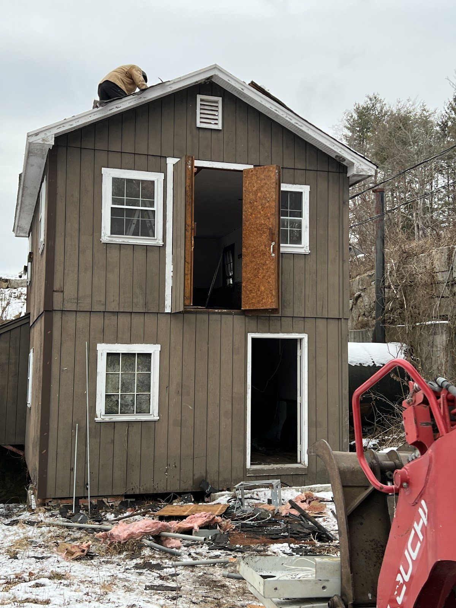
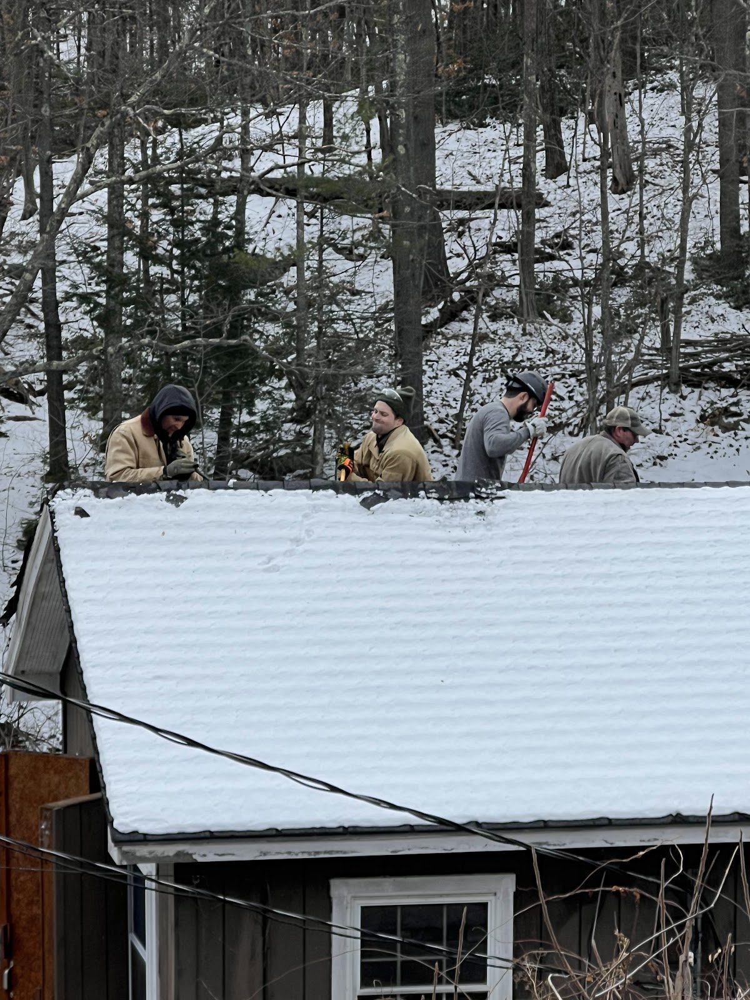
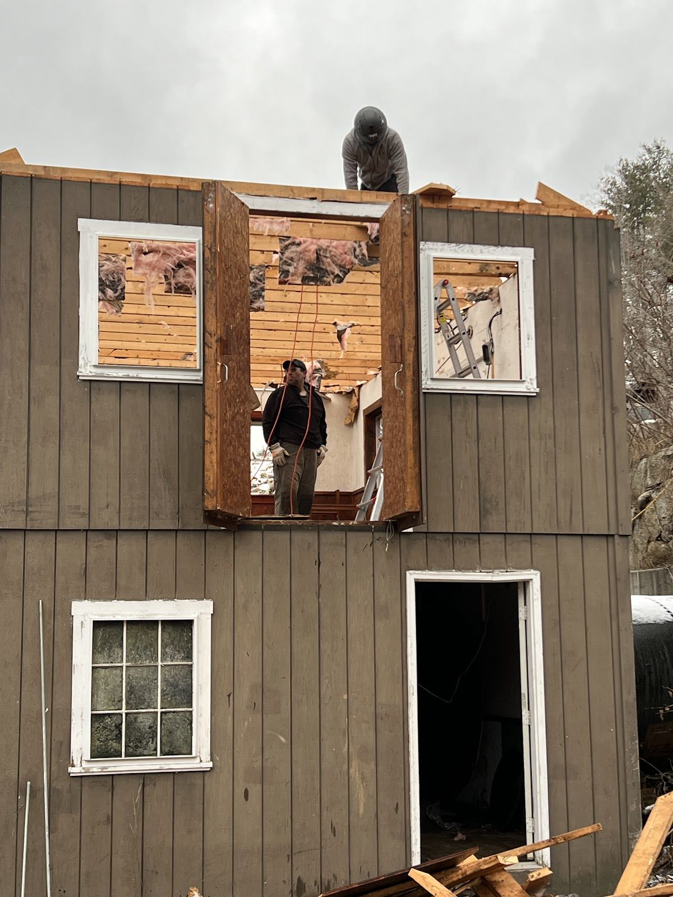
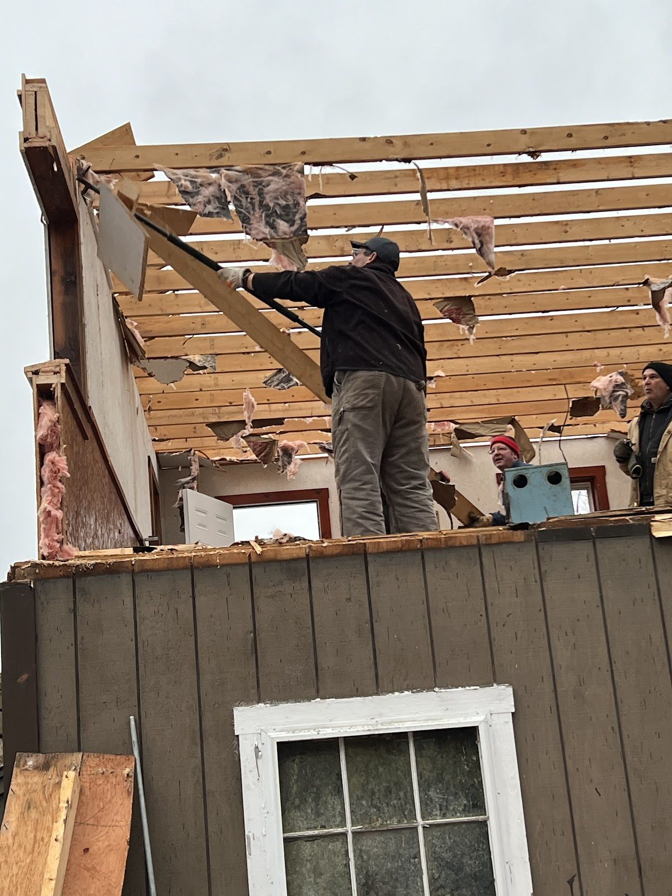
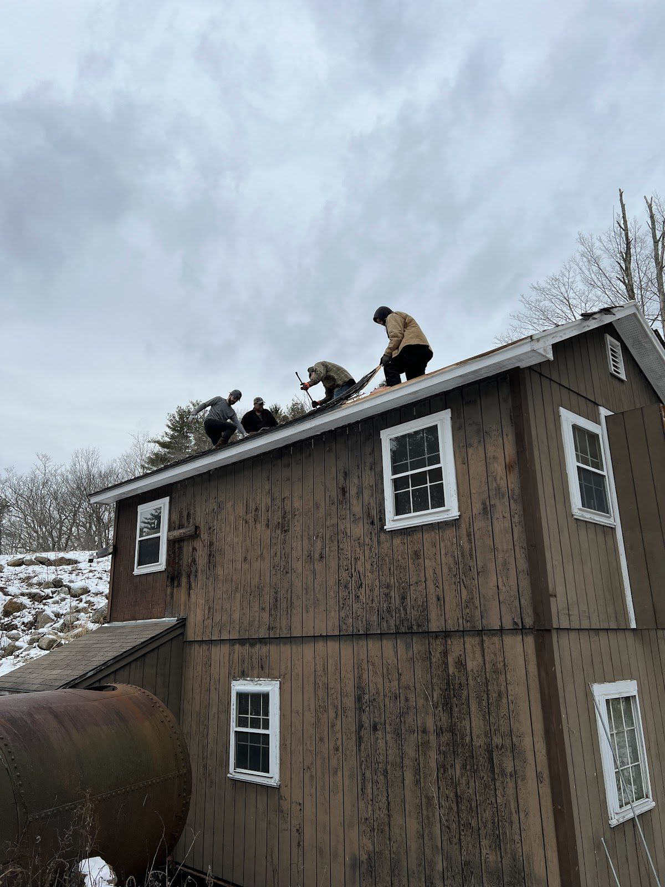
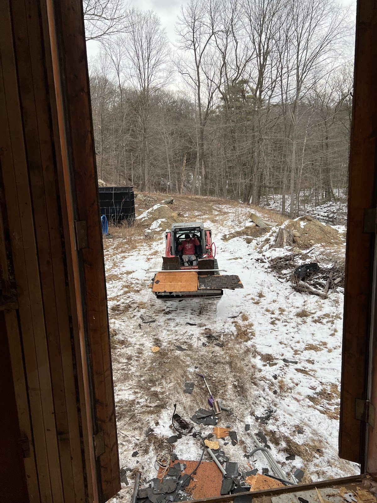
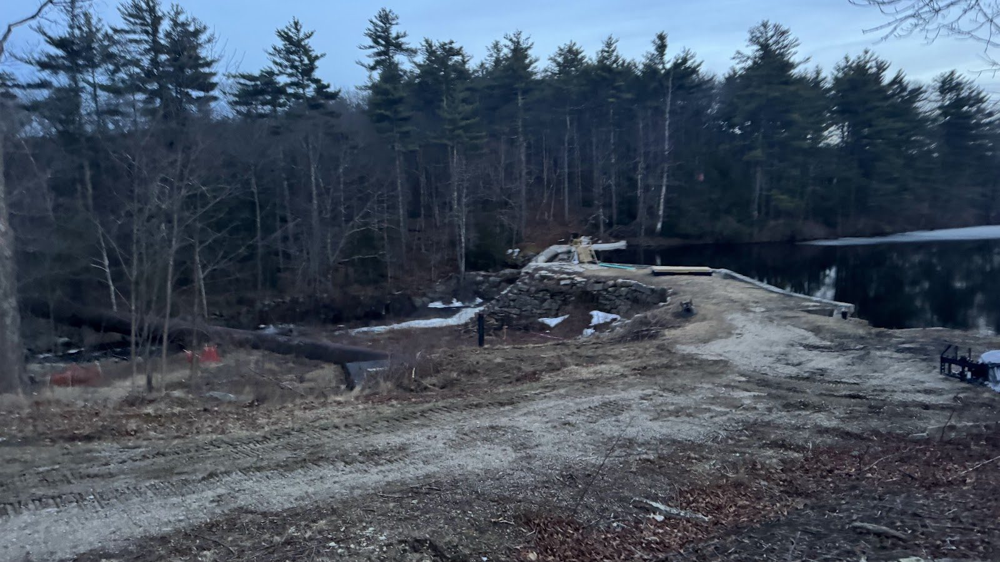
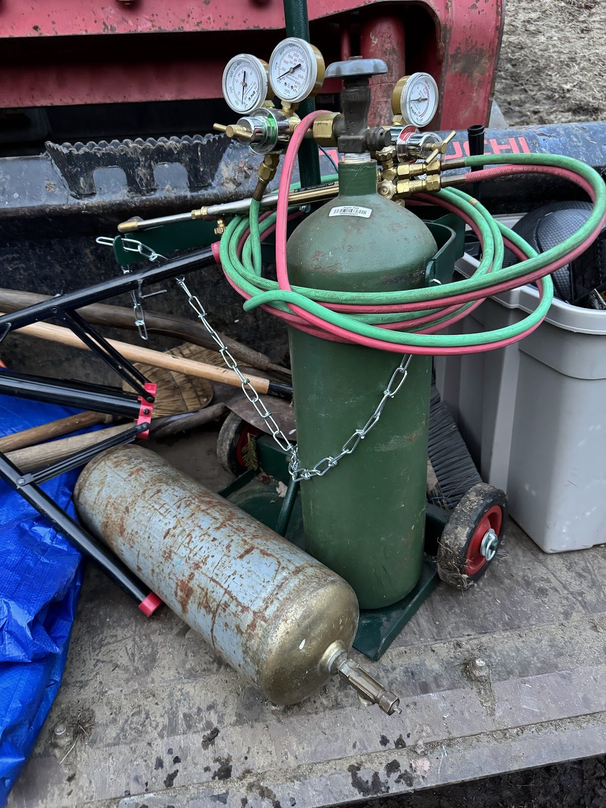

Disassembling the Old Building

The old powerhouse building is coming apart — carefully, piece by piece, and with more respect than work like this usually gets.
The building shell needed updating to modern specifications, and there was no way to do that with it standing. Decades of weather had taken their toll, and the shell's biggest limitation was baked into the original design: the only way to move major equipment in or out was to open up the building itself. To update the shell — and to get the old machinery out and the new machinery in — it had to be fully disassembled.







So this winter and spring, we've been disassembling, not demolishing. Salvageable materials are being set aside. The historic fieldstone foundation walls — some of the best masonry on the site — stay exactly where they are, and the updated shell will stand on them. The old equipment inside was documented exhaustively before anything moved.
Winter turns out to be a decent season for this kind of work. Frozen ground carries equipment well, there's no vegetation in the way, and the river is quiet under the ice.
As the structure opens up, we're getting our best look yet at how the original builders arranged the water passages below — knowledge that's feeding straight into the foundation work for the updated shell. The goal is a building that looks like it belongs on a New England mill site but works like a modern generating station.
Foundation work starts as soon as the ground allows.